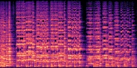

Incremental FastPitch: Chunk-based High Quality Text to Speech
Parallel text-to-speech models have been widely applied for real-time speech synthesis, and they offer more controllability and a much faster synthesis process compared with conventional auto-regressive models. Although parallel models have benefits in many aspects, they become naturally unfit for incremental synthesis due to their fully parallel architecture such as transformer. In this work, we propose Incremental FastPitch, a novel FastPitch variant capable of incrementally producing high-quality Mel chunks by improving the architecture with chunk-based FFT blocks, training with receptive-field constrained chunk attention masks, and inference with fixed size past model states. Experimental results show that our proposal can produce speech quality comparable to the parallel FastPitch, with a significant lower latency that allows even lower response time for real-time speech applications.
Audio Samples
Dataset: Chinese Standard Mandarin Speech Coprus (10000 Sentences)
FastPitch: The original Parallel FastPitch.
Incremental FastPitch (Static): Incremental FastPitch, trained with static chunk-based masks.
Incremental FastPitch (Dynamic): Incremental FastPitch, trained with dynamic chunk-based masks.
| Ground Truth | FastPitch | Incremental FastPitch (Static) | Incremental FastPitch (Dynamic) | ||||
|---|---|---|---|---|---|---|---|
| Mel |

|
|
|
|
|||
| Waveform | |||||||
| Mel |

|
|
|
|
|||
| Waveform | |||||||